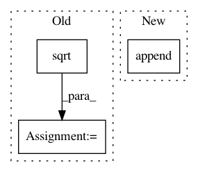

ad022c169dbbc3b3f3c42cfa743b0d744c13d88d,trackpy/tests/test_feature.py,CommonFeatureIdentificationTests,test_ep,#CommonFeatureIdentificationTests#,650
Before Change
draw_size = 4.5
locate_diameter = 21
N = 200
noise_expectation = np.array([1/2., np.sqrt(1/12.)]) // average, stdev
expected, image = draw_array(N, draw_size, bitdepth=12)
for n, noise in enumerate([0.01, 0.02, 0.05, 0.1, 0.2, 0.3, 0.5]):
noise_level = int((2**12 - 1) * noise)
After Change
_, actual = sort_positions(f[["y", "x"]].values, expected)
rms_dev = np.sqrt(np.mean(np.sum((actual-expected)**2, 1)))
real_rms_dev.append(rms_dev)
eps.append(f["ep"].mean())
// Additionally test the measured noise
black_level, noise = measure_noise(image, image_noisy,
In pattern: SUPERPATTERN
Frequency: 4
Non-data size: 3
Instances
Project Name: soft-matter/trackpy
Commit Name: ad022c169dbbc3b3f3c42cfa743b0d744c13d88d
Time: 2017-12-06
Author: caspervdw@gmail.com
File Name: trackpy/tests/test_feature.py
Class Name: CommonFeatureIdentificationTests
Method Name: test_ep
Project Name: PacktPublishing/Deep-Reinforcement-Learning-Hands-On
Commit Name: e70bdb2d089ae283781c45b8d97963823a984baa
Time: 2017-12-15
Author: max.lapan@gmail.com
File Name: ch10/00_pong_pg.py
Class Name:
Method Name:
Project Name: pyannote/pyannote-audio
Commit Name: 16fb800c2d3f6d7198ad237adcab8f60828d0982
Time: 2017-05-15
Author: bredin@limsi.fr
File Name: pyannote/audio/embedding/segmentation.py
Class Name: Segmentation
Method Name: apply
Project Name: scikit-multiflow/scikit-multiflow
Commit Name: fdb79b730cf635480ac1b264392345936b591ad0
Time: 2020-01-10
Author: albandecrevoisier@gmail.com
File Name: src/skmultiflow/trees/hoeffding_tree_regressor.py
Class Name: HoeffdingTreeRegressor
Method Name: normalize_sample